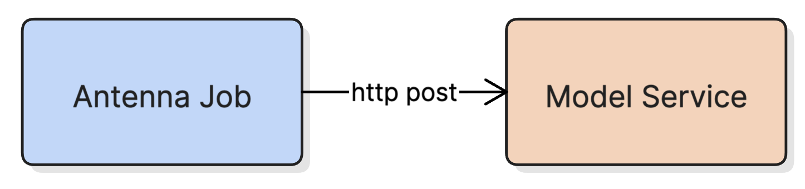
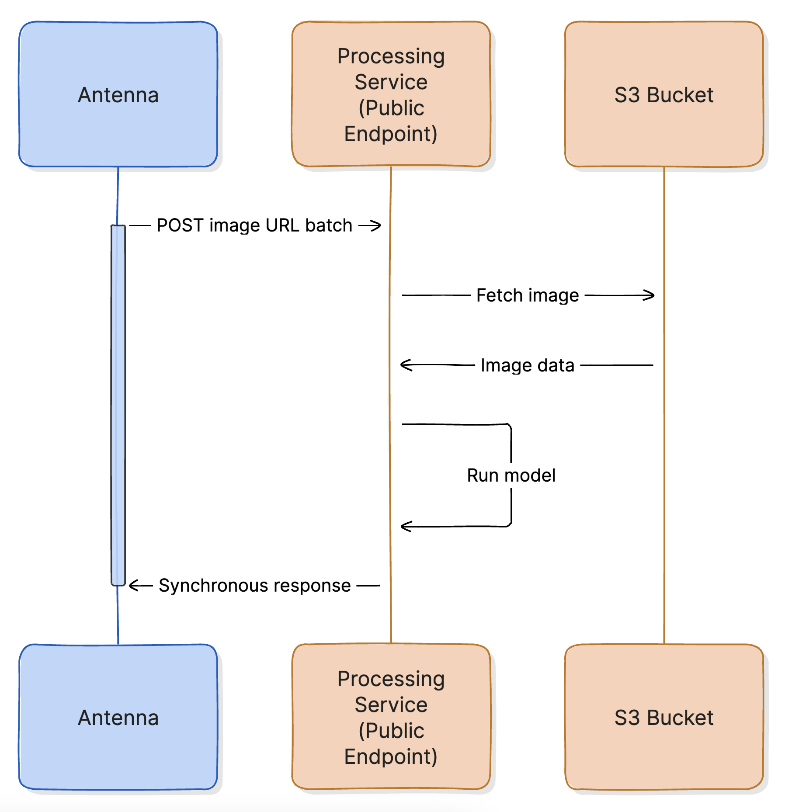

SciPy 2026
Carlos Garcia Jurado Suarez
UW eScience Institute · Mila Institute
Integration barrier
Public HTTP endpoint required, a blocker for HPC clusters and university firewalls.
Throughput ceiling
Synchronous design prevented scaling to large jobs: >300 image jobs would stall.



Deploy anywhere
Workers run anywhere with outbound HTTP: HPC clusters, firewalled networks, local machines.
Multi-institution
Workers can span institutions and different hardware, no uniformity needed.
Horizontal scaling
Add workers without changing Antenna; each independently polls and claims batches.
Inverting push/pull → workers control the speed.
class RESTDataset(torch.utils.data.IterableDataset):
# pulls rows from /jobs/{job_id} until exhausted
# downloads images from S3
# assembles batches of stacked tensorsreturn torch.utils.data.DataLoader(
dataset,
batch_size=1, # batches built in the dataset workers, not by DataLoader
pin_memory=True, # DMA transfer to GPU
collate_fn=_no_op_collate_fn # nothing to collate since each dataset item is already a batch
...)
torch.cuda.Stream()
...
with torch.cuda.stream(self.stream):
self.next_batch = v.to(self.device, non_blocking=True)
torchvision.transforms.ToPILImage()
ThreadPoolExecutor.submit(...)
Antenna platform
insectai.org
Worker implementation & GPU optimizations
github.com/RolnickLab/ami-data-companion
Antenna backend (async job queue API)
github.com/RolnickLab/antenna
Questions?